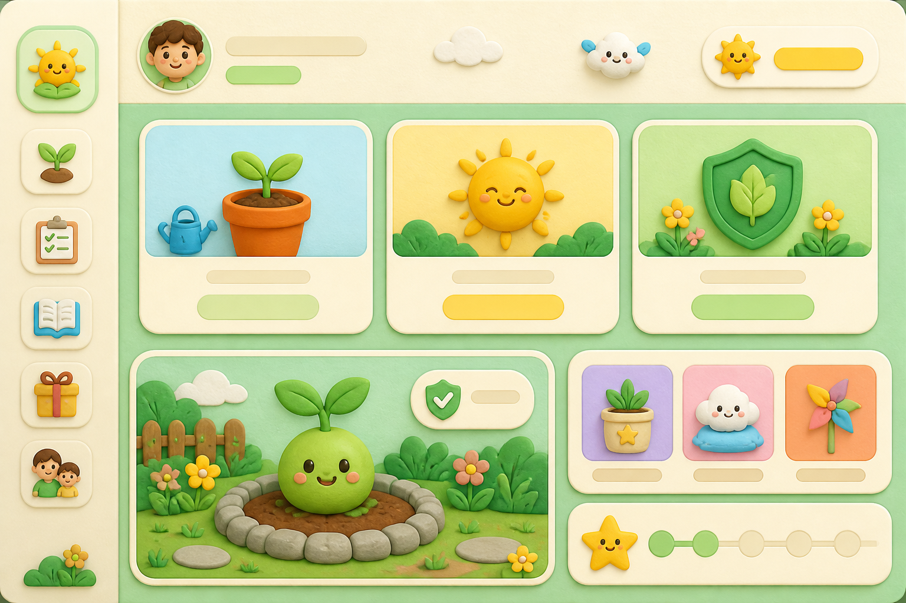
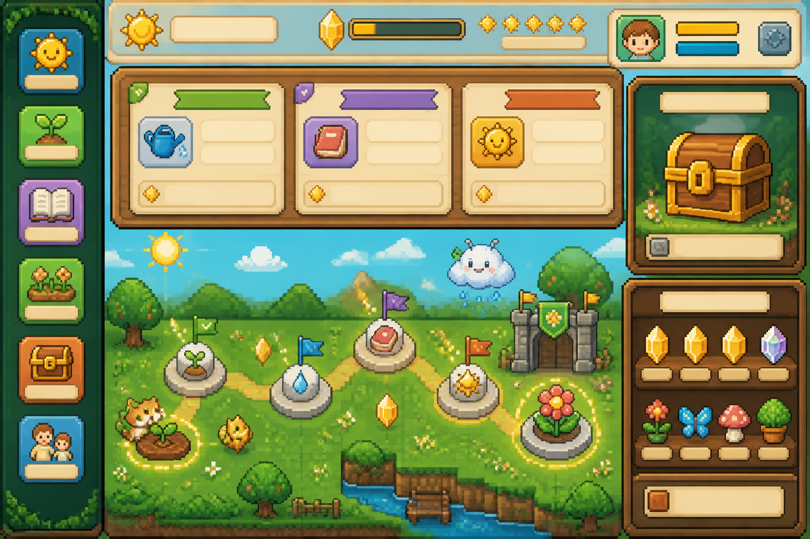

方向 A · 温柔花园
阳光花园 / Clay Garden
纸雕和软 3D 视觉，信息最清楚，适合低龄幼儿。优点是亲和、容易看懂；缺点是游戏感需要靠动画和任务反馈继续加强。
这两张图只用于确定幼儿版的视觉方向，不会直接替换线上页面。两套方案都保留“今日任务 → 阳光 → 成长 → 奖励”的核心闭环。

纸雕和软 3D 视觉，信息最清楚，适合低龄幼儿。优点是亲和、容易看懂；缺点是游戏感需要靠动画和任务反馈继续加强。

原创像素方块世界，任务牌、地图节点、宝箱和收集栏都更像游戏。优先推荐这个方向，再把字号、触控目标和色彩对比做幼儿化。